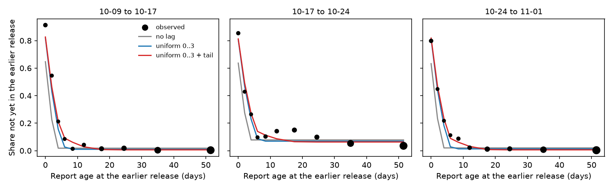
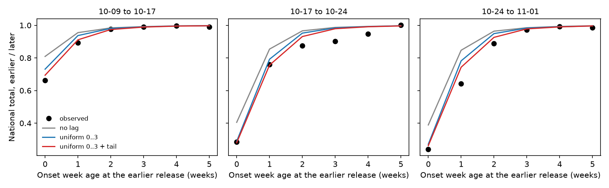
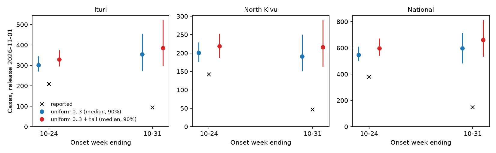

Publication lag¶
How the renewal models handle the lag between a case's report and its publication in a hub release, what supports it, and the smallest change the release data motivate.
Question¶
The renewal models fit one release and thin its newest report days by a fixed report-to-publication lag, uniform on 0 to 3 days. Removing the lag lowers the newest weeks a lot (Ituri, week ending 10-31, median 344 to 225, against 302 from seabbs-rwnowcast). This page asks what supports the lag and how to model reporting in the spirit of epinowcast while staying daily and keeping the hub's imputation in the model.
The current model¶
Each part was added for a reason, and the evidence below supports keeping each one.
- Delay hazard (
model/delays.py,HazardDelay). The onset-to-report delay is a discrete hazard, \(\operatorname{logit} h_s(d) = \beta(d) + \gamma(s)\), with \(\beta\) a random walk over delay and \(\gamma\) a weekly random walk over onset day. This is the epinowcast hazard model with a non-parametric baseline and a reference-date effect. - Missing onsets and the hub's imputation (
model/observation.py,onset_expectationsandbacksample). A share \(\pi_p(t)\) of cases reported on day \(t\) have no onset, and the hub gives each one an onset by subtracting a delay drawn from its published delays. The model reproduces that procedure in expectation, so the imputed counts inform \(\pi\) and \(\lambda\) without being treated as true onsets. This needs the daily axis, because the hub works by day. epinowcast's missing-reference model (Lison et al.) sees missing cases by report day; here only their imputed onsets are published, so the imputation itself has to be modelled. - Publication lag (
model/observation.py,published_by;model/model.py,build_modelwithpublication_lag="fixed"). A case reported on day \(t\) is in the release at \(T\) with probability \(c(t) = F_\ell(T - t)\). \(c\) thins the known stream, the missing-onset reports the hub imputes, and the delay triangle alike. - Likelihood (
OnsetStreams._scoreand_score_delays). Weekly known and imputed onsets at the latest release are negative binomial. The delay file is Dirichlet-multinomial over delays given each onset week's total. Together these factor epinowcast's reporting-triangle likelihood into weekly totals and conditional delay shares. The Dirichlet-multinomial keeps the pooled delays of thousands of cases from making the delay overconfident. - Final counts (
_nowcastand_recentred). Known final counts add the draws still to come to the published counts, as epinowcast does. Imputed final counts are centred on the current imputed count, because the hub re-imputes at each release and a week's imputed count can fall.
Against epinowcast¶
In epinowcast the report date is the day a count enters a snapshot, so its triangle needs no publication lag. Here the delay file's report date is the line list's, and a case can enter a release days after it. Two delays therefore chain: onset to report (\(f\), daily and learnt) and report to publication (\(F_\ell\)). The lag depends on \(T - t\), not on covariates of the report date, so epinowcast's report-date effect cannot express it.
Within one release, \(c(t)\) and the short-delay hazard of the newest onsets both thin the newest report days. The two are confounded, which is why removing the lag moves the newest weeks so far. The only data that separate them are the earlier releases: which delay-file rows were already published at each one. The model does not use them.
Report-date day-of-week effects are not proposed. Onsets are published by week and releases are weekly, so a day-of-week effect on report would rest on the prior.
Evidence from the releases¶
The missing likelihood term¶
If releases are nested, so that each row of release \(k\) is also in release \(k + 1\), their joint likelihood factors as
The model fits \(P(V_N)\). The pair term is the probability that each row at \(V_{k+1}\) was already in \(V_k\),
averaged over the onset day \(u\) within the published onset week, so \(t_u\) is that onset plus the row's delay.
\(b_k\) is a background share of rows that appear late whatever their report age.
These are mostly onsets recorded later for cases already counted as imputed.
Without \(b_k\) those rows read as a long lag, which is why the empirical lag (data/releases.py, publication_lag_pmf) made old weeks grow and was dropped.
Releases are nested except for 8 to 15 rows removed per pair, which the fits leave out.
scripts/publication_lag.py fits this term alone by maximum likelihood on the four delay files, with \(T_k\) the release date as in the model.
| Lag | Negative log likelihood | Tail weight | \(b_k\) (10-09, 10-17, 10-24) |
|---|---|---|---|
| None | 2264.2 | 0.018, 0.078, 0.020 | |
| Uniform 0..2 | 2081.5 | 0.012, 0.071, 0.015 | |
| Uniform 0..3 (current) | 2035.2 | 0.010, 0.069, 0.013 | |
| Uniform 0..4 | 2018.4 | 0.009, 0.068, 0.011 | |
| Uniform 0..3, tail on 4..14 | 1986.7 | 0.105 | 0.006, 0.063, 0.006 |
The current lag beats no lag by 229 log-likelihood units. A free simplex on 0..3 gains about 11 units for three parameters, and its single cells are not identified from weekly onsets, so the uniform shape stands. A tail weight on 4 to 14 days gains a further 48.5 units for one parameter, with a 95% profile interval of 0.08 to 0.13. \(b_k\) is near 0.6% for two pairs and 6.3% for 10-17 to 10-24, when the imputed total fell from 3150 to 2836 as onsets were recorded for earlier cases.

Part of the lag is the gap between the release date and its data cut-off, 0 to 1 days for these releases. With \(T_k\) set to each release's latest onset or report day instead, a lag is still needed (no lag 2154.9 against 2031.6 for uniform 0..3), so the lag is not only that gap. The model keeps the release date.
Check against the totals¶
The empirical lag was dropped because it predicted growth in old weeks that the totals do not show. The figure compares, for each pair of releases, the national total of each onset week at the earlier release over the later, with the ratio each lag predicts from a fixed delay pmf (the latest delay file, onset weeks at least 8 weeks old). No lag overstates the growth of old weeks. The tail moves the predictions towards the data at 0 to 2 weeks and leaves weeks 3 or more weeks old near complete. In the last two pairs the totals 1 to 4 weeks old grew more than any lag predicts, which fits the slower reporting of recent weeks (#34) that \(\gamma(s)\) carries in the model, not a longer lag.

Proposed change¶
Keep the delay hazard, the generative imputation, the Dirichlet-multinomial and the 0 to 3 day lag body. Add one parameter and one likelihood term.
- The lag becomes uniform on 0 to 3 days with weight \(w\) spread uniformly over 4 to 14 days, \(w \sim \text{Beta}(1, 9)\).
- The pair term above enters the model as a binomial on the delay-file rows of each earlier release, sharing \(F_\ell\) with the onset streams, with \(b_k \sim \text{Beta}(1, 19)\) per pair.
Rows 4 to 14 days old at the earlier release identify \(w\), rows older than 14 days identify \(b_k\), and the latest release keeps identifying \(f\), \(\pi\) and \(\lambda\) as now.
The term conditions on each row being in the later release, so it adds information on \(F_\ell\) only and does not count the latest release twice.
Its inputs are small: per pair, each row cell's report ages at both releases and its kept and new counts (release_pairs in the script).
The imputed stream is not fitted to its increments between releases. The hub redraws every imputed onset at each release, so changes between releases are not counts of new cases and can be negative. The latest-release negative binomial, centred as now, already handles that.
Prototype at the 2026-11-01 release¶
The main renewal model was fitted twice to the 11-01 release, once with the current lag and once with the tail fixed at 0.105.
The tail fit plugs the estimate in through the empirical path (scripts/publication_lag_fit.py), so it is a plug-in, not the joint model proposed above.
Both use the submission sampler, 2 chains of 500 warm-up and 500 draws at target acceptance 0.9, on main at 44fd569.
| Place | Week ending | Reported at 11-01 | Uniform 0..3 | Uniform 0..3 + tail |
|---|---|---|---|---|
| Ituri | 10-24 | 209 | 301 (270 to 346) | 329 (296 to 375) |
| Ituri | 10-31 | 94 | 354 (274 to 455) | 385 (297 to 523) |
| North Kivu | 10-24 | 142 | 201 (176 to 229) | 219 (187 to 253) |
| North Kivu | 10-31 | 47 | 191 (151 to 250) | 216 (163 to 290) |
| National | 10-24 | 381 | 546 (504 to 610) | 598 (540 to 672) |
| National | 10-31 | 150 | 597 (482 to 715) | 662 (532 to 814) |
Medians with 90% intervals of final counts.
| Diagnostic | Uniform 0..3 | Uniform 0..3 + tail |
|---|---|---|
| Worst R-hat (site) | 1.054 (rt_sd) |
1.080 (rt_sd) |
| Lowest bulk / tail ESS | 96 / 163 | 63 / 140 |
| Divergences | 4 of 1000 | 3 of 1000 |
The tail raises the two newest weeks by 8 to 13%, the opposite direction to removing the lag.
Neither 10-31 nowcast can be scored until later releases.
The worst-mixing site is rt_sd in both fits.
The tail fit mixes a little worse there, which two chains cannot separate from noise.

Next steps¶
- Implement the pair term in
OnsetStreamswith \(w\) and \(b_k\) as above, and test that it recovers \(w\) in simulated releases. - Score the change at origin 2026-10-24 against the 11-01 release, where both versions can be compared on reported counts, before adopting it.